9th Grade History & Society Worksheets
173 History & Society resources for 9th Grade, ready to print: Trono, Tremotino, Tirolo, Storia and more. Each resource page shows the grade range, page count and a preview and links straight to the product on TpT.
173 resources

World War I Reading Comprehension Passages | History Scavenger Hunt 8-9

Art After 1945 BUNDLE | Art History Fact Sheets with Answer Keys

Modern Art Movements BUNDLE | Art History Fact Sheets with Answer Keys

19th-Century Art Movements BUNDLE | Art History Fact Sheets with Answer Keys

Romanesque to Biedermeier Art BUNDLE | Art History Fact Sheets with Answer Keys
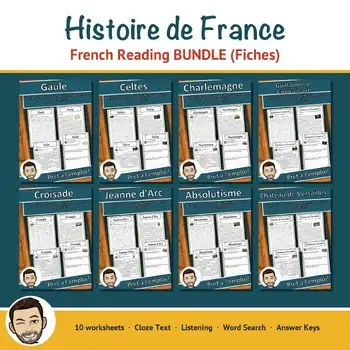
Histoire de France – French Reading BUNDLE | Gaul to Versailles Fiches
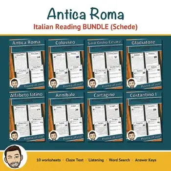
Antica Roma – Italian Reading Comprehension BUNDLE | Ancient Rome Schede
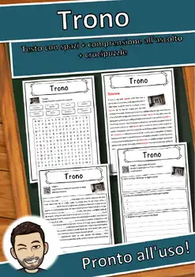
Trono – Italian Reading Comprehension Worksheet (Scheda): Cloze & Listening
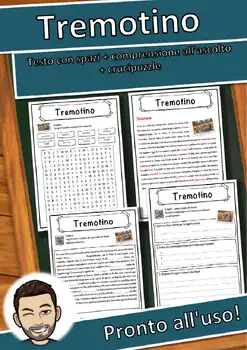
Tremotino – Italian Reading Comprehension Worksheet (Scheda): Cloze & Listening
Tirolo – Italian Reading Comprehension Worksheet (Scheda): Cloze & Listening
Storia – Italian Reading Comprehension Worksheet (Scheda): Cloze & Listening
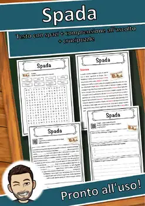
Spada – Italian Reading Comprehension Worksheet (Scheda): Cloze & Listening
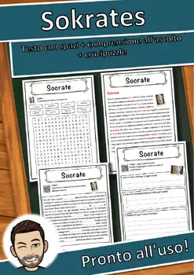
Sokrates – Italian Reading Comprehension Worksheet (Scheda): Cloze & Listening
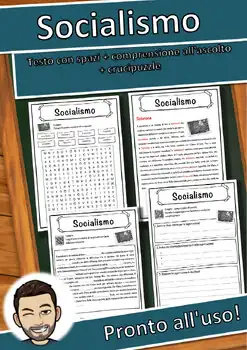
Socialismo – Italian Reading Comprehension Worksheet (Scheda): Cloze & Listening
Secolo – Italian Reading Comprehension Worksheet (Scheda): Cloze & Listening
Schach – Italian Reading Comprehension Worksheet (Scheda): Cloze & Listening
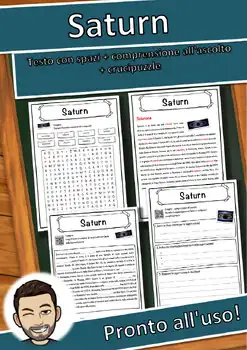
Saturn – Italian Reading Comprehension Worksheet (Scheda): Cloze & Listening
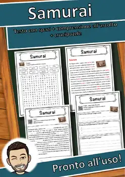
Samurai – Italian Reading Comprehension Worksheet (Scheda): Cloze & Listening
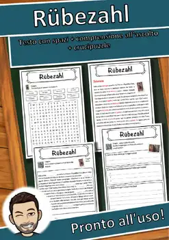
Rübezahl – Italian Reading Comprehension Worksheet (Scheda): Cloze & Listening
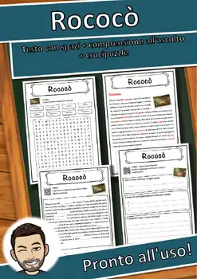
Rococò – Italian Reading Comprehension Worksheet (Scheda): Cloze & Listening
Robin Hood – Italian Reading Comprehension Worksheet (Scheda): Cloze & Listening
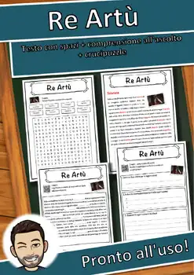
Re Artù – Italian Reading Comprehension Worksheet (Scheda): Cloze & Listening
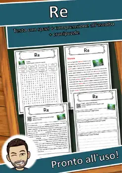
Re – Italian Reading Comprehension Worksheet (Scheda): Cloze & Listening
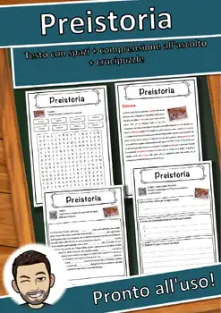
Preistoria – Italian Reading Comprehension Worksheet (Scheda): Cloze & Listening
Pistola – Italian Reading Comprehension Worksheet (Scheda): Cloze & Listening
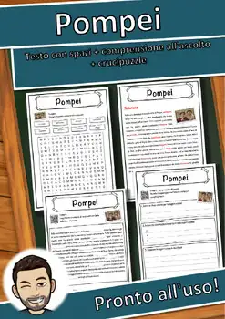
Pompei – Italian Reading Comprehension Worksheet (Scheda): Cloze & Listening
Platone – Italian Reading Comprehension Worksheet (Scheda): Cloze & Listening
Pendolo – Italian Reading Comprehension Worksheet (Scheda): Cloze & Listening
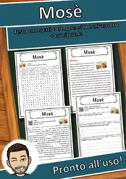
Mosè – Italian Reading Comprehension Worksheet (Scheda): Cloze & Listening
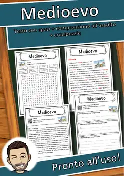
Medioevo – Italian Reading Comprehension Worksheet (Scheda): Cloze & Listening
Marco Polo – Italian Reading Comprehension Worksheet (Scheda): Cloze & Listening
Mantica – Italian Reading Comprehension Worksheet (Scheda): Cloze & Listening
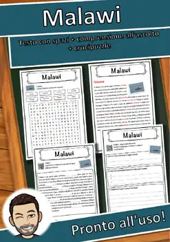
Malawi – Italian Reading Comprehension Worksheet (Scheda): Cloze & Listening
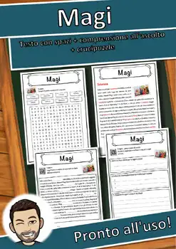
Magi – Italian Reading Comprehension Worksheet (Scheda): Cloze & Listening
Estia – Italian Reading Comprehension Worksheet (Scheda): Cloze & Listening
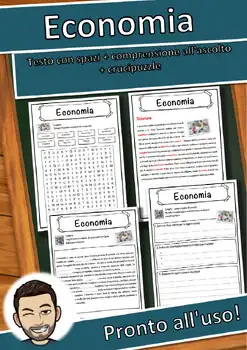
Economia – Italian Reading Comprehension Worksheet (Scheda): Cloze & Listening
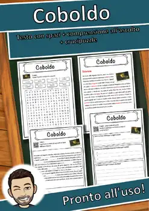
Coboldo – Italian Reading Comprehension Worksheet (Scheda): Cloze & Listening

Afrodite – Italian Reading Comprehension Worksheet (Scheda): Cloze & Listening

Alabarda – Italian Reading Comprehension Worksheet (Scheda): Cloze & Listening
Panettiere – Italian Reading Comprehension Worksheet (Scheda): Cloze & Listening
Pane – Italian Reading Comprehension Worksheet (Scheda): Cloze & Listening
Palindromo – Italian Reading Comprehension Worksheet (Scheda): Cloze & Listening
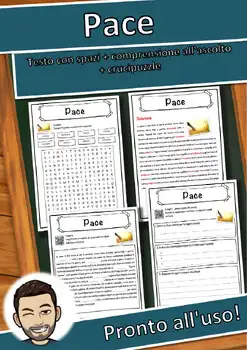
Pace – Italian Reading Comprehension Worksheet (Scheda): Cloze & Listening
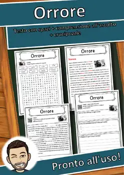
Orrore – Italian Reading Comprehension Worksheet (Scheda): Cloze & Listening
Oro – Italian Reading Comprehension Worksheet (Scheda): Cloze & Listening
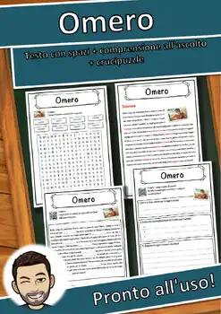
Omero – Italian Reading Comprehension Worksheet (Scheda): Cloze & Listening
Olocausto – Italian Reading Comprehension Worksheet (Scheda): Cloze & Listening
Odino – Italian Reading Comprehension Worksheet (Scheda): Cloze & Listening
No resources found – try a different search term or filter.